Tapes i vins en un racó de la plaça Bell-lloc
Vins per copes, cervesa artesana i tapes per compartir, apartats del bullici del Barri Vell.
Dimarts a dissabte, de 18 a 24 h 4,7 a Google
Demana com a la barra
Marca el que et ve de gust i el tiquet ho suma, per fer-te una idea. Preus copiats de la pissarra del bar: poden canviar.
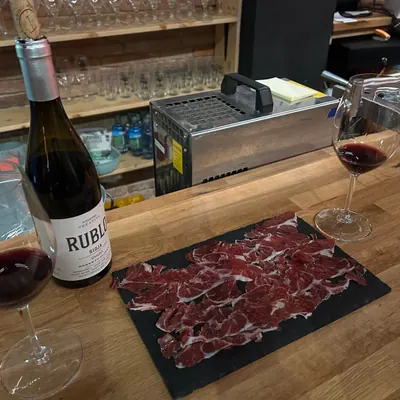
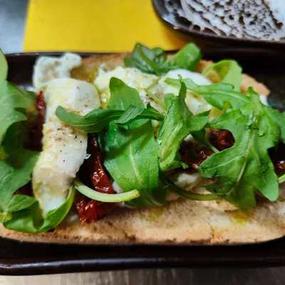
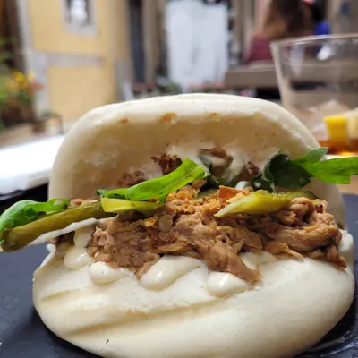
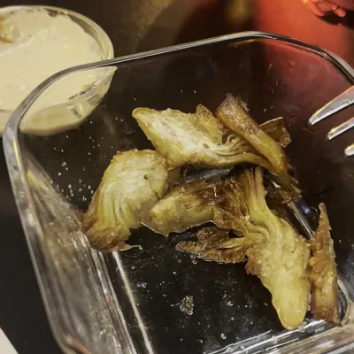
LA TÒRIA
Pl. Bell-lloc, 4 · Girona
TAPES PER COMPARTIR
- Taula pernil ibèric + pa amb tomata16,50
- Bruschetta mozzarella, tomata seca, pesto i rúcula7,50
- Bruschetta sardina fumada, cherry, crema de formatge i piparra7,50
- Bao porc rostit, rúcula i encurtits (2 u.)12,00
- Provolone, espècies i crostonets8,00
- Hummus, pebre vermell fumat i pita8,00
- Anxoves artesanals + pa amb tomata7,50
- Croquetes de rostit i ceps (4 u.)6,00
- Carxofes, salsa soja, mel i llimona7,00
- Fingers de pollastre, salsa mostassa7,00
- Tires de calamar i llimona7,00
- Patata brava, salsa picant la Tòria5,00
- Olives trencades3,50
- Xips2,00
Vins per copes, cervesa artesana i sidra: pregunta a la barra.
Gràcies i fins aviat!
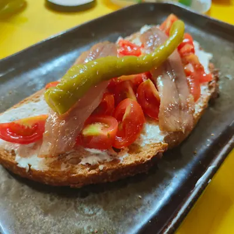
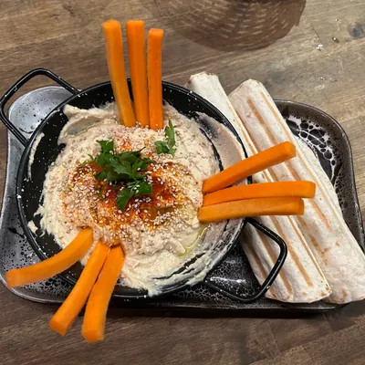
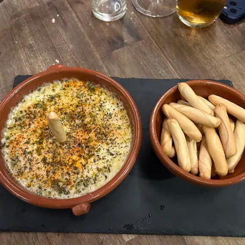
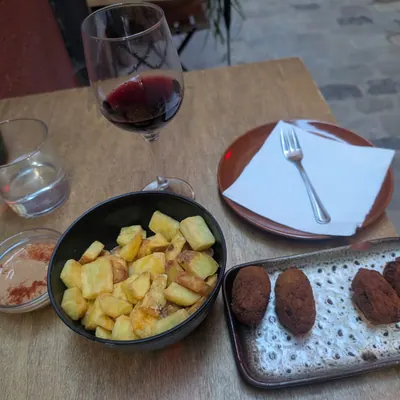
Vins per copes, cervesa artesana i sidra
A dins, les pissarres de vins: negre, blanc i escumós. Què hi ha avui? Pregunta a la barra.
- Negre
- Blanc
- Escumós
- Cervesa
- Sidra


Maó, fusta i pissarres
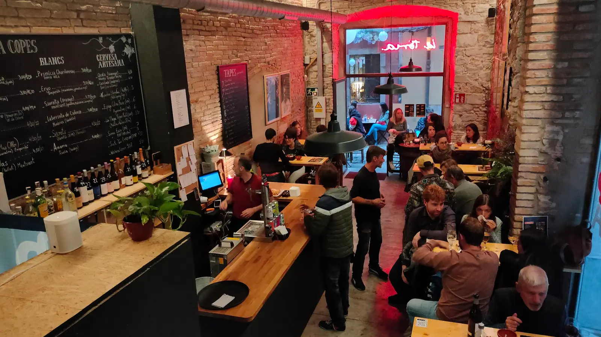
A dins, la barra llarga i les pissarres de vins: negre, blanc i escumós. A fora, un parell de taules a la plaça, lluny del soroll.
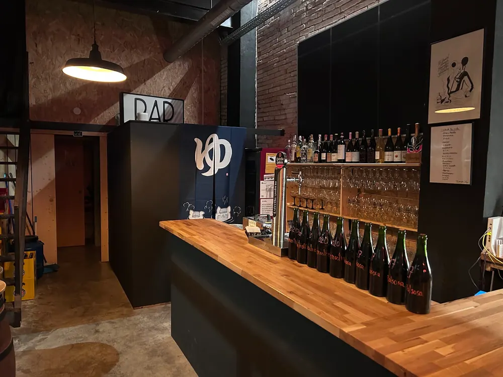
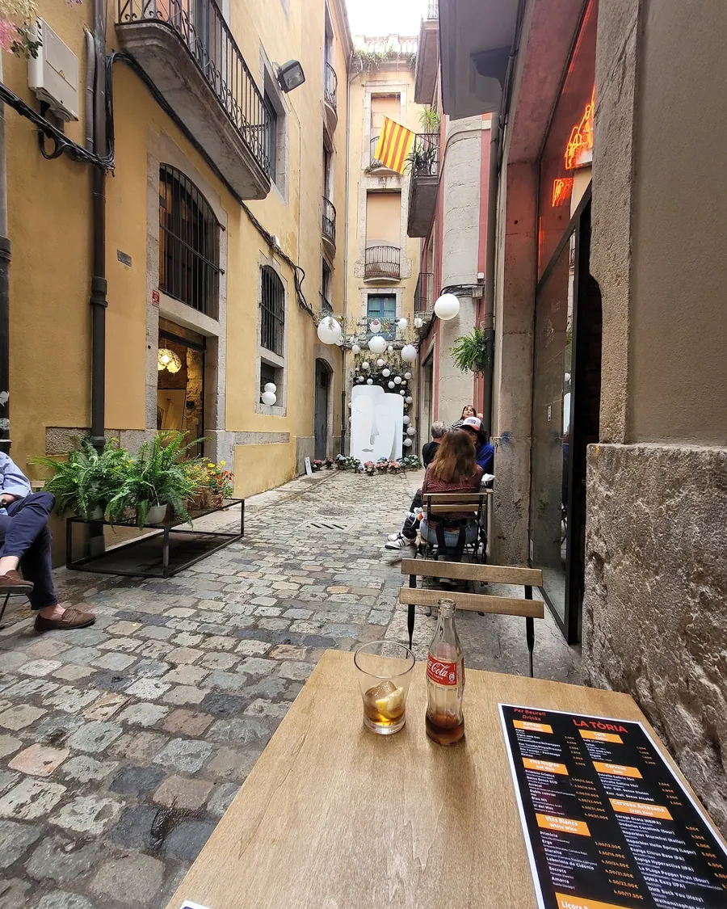
El que en diuen
Fins aviat, a la plaça Bell-lloc
Horari i adreça
Plaça Bell-lloc, 4
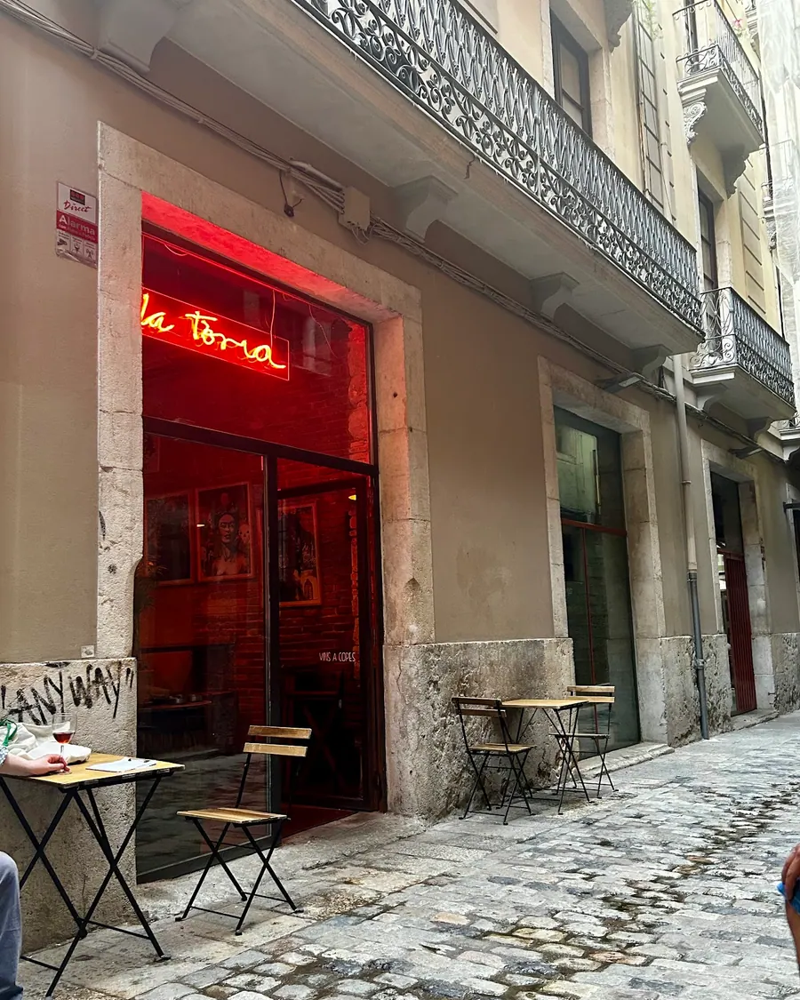
La setmana
Es carrega de Google Maps en tocar el botó.